Valerie Martínez Pulido · Abrahan Basto Martínez · Rubén Esguerra Fernández
Departamento de Matemáticas, Física y Ciencia de Datos, Universidad del Norte, Barranquilla, Colombia
pmartinezv@uninorte.edu.co · abrahanb@uninorte.edu.co · esguerrar@uninorte.edu.co
Curso de Machine Learning — Entrega 2: Preparación de datos y modelos base
La predicción de la fuga de clientes es una tarea central en los servicios financieros minoristas, y su resolución mediante aprendizaje supervisado depende críticamente de la calidad de los datos de entrada. En este trabajo se presentan la auditoría de datos y los modelos base de un proyecto sobre un conjunto público de una empresa fintech colombiana correspondiente a 2023, compuesto por 48.723 clientes descritos con 54 variables y 3.159.157 transacciones individuales. El análisis exploratorio identificó tres problemas con impacto directo sobre el modelado: la variable objetivo resultó casi determinada por el número de productos activos, con una escalera de paso exactamente constante de 0,05 que explica el 76,7 % de su varianza; tres columnas transaccionales resultaron duplicados desalineados o exactos; y los valores faltantes de la utilización de crédito resultaron estrictamente estructurales. Como consecuencia se eliminaron diecisiete variables, cada una respaldada por evidencia cuantitativa. Dado que la variable objetivo es continua, se abordan las dos formulaciones: regresión sobre el puntaje y clasificación tras binarizarlo. Un experimento de ablación cuantifica la fuga de información en ambas, y es la formulación de regresión la que lo hace con más nitidez: incluir la variable sospechosa eleva el coeficiente de determinación de 0,151 a 0,921, y el área bajo la curva de 0,682 a 0,974. Sobre el conjunto depurado, una regresión logística con penalización L1 alcanza un área bajo la curva de 0,683 en prueba, con exhaustividad de 0,652, seleccionando cincuenta y siete de setenta y ocho variables; una regresión Lasso sobre el objetivo continuo alcanza R2 = 0,151 con cuarenta variables. Un clasificador de k vecinos más cercanos, que no impone forma funcional alguna, no supera al modelo lineal, lo que acota empíricamente el margen de mejora disponible. El desempeño se concentra en tres predictores, mientras que el comportamiento transaccional no aporta capacidad predictiva alguna.
Palabras clave: Fuga de clientes, Regresión logística, Regresión Ridge y Lasso, Fuga de información, Calidad de datos, Fintech.
La retención de clientes y la estimación de su valor son dos problemas centrales en la banca minorista y en el sector fintech. Adquirir un cliente nuevo resulta considerablemente más costoso que conservar uno existente, y el aporte económico de cada cliente a lo largo de su relación con la entidad es marcadamente heterogéneo, por lo que anticipar quién tiene mayor probabilidad de fuga (churn) y cuánto valor generará (customer lifetime value, CLV) permite focalizar las acciones comerciales donde tienen mayor impacto (Gupta et al., 2006; Verbeke et al., 2012). Ambas tareas se abordan habitualmente como problemas de aprendizaje supervisado: clasificación o regresión para la fuga, y regresión —o clasificación ordinal sobre segmentos de valor— para el CLV.
Sobre datos tabulares como los de este dominio, los modelos de referencia van desde alternativas lineales interpretables, como la regresión logística y las regresiones regularizadas Ridge y Lasso, hasta métodos de ensamble que constituyen el estándar actual, como Random Forest (Breiman, 2001) y XGBoost (Chen y Guestrin, 2016). Estos algoritmos son robustos frente a variables heterogéneas y relaciones no lineales, y por ello son la elección natural para el modelado posterior de este proyecto. Sin embargo, su desempeño está condicionado por un factor previo a la elección del algoritmo: la calidad y la coherencia de los datos de entrada. Metodologías clásicas del área, como CRISP-DM (Wirth y Hipp, 2000), sitúan precisamente las fases de comprensión y preparación de los datos antes del modelado, y el análisis exploratorio de datos (EDA) en el sentido de Tukey (1977) es la herramienta para ejecutarlas.
Una limitación frecuente y a menudo subestimada en esta fase es la fuga de información (data leakage): cuando una variable predictora codifica, de forma directa o indirecta, la información de la etiqueta, las métricas de validación se inflan artificialmente y el modelo no generaliza a datos nuevos (Kaufman et al., 2012). La fuga no se limita a las variables: también puede introducirse en el propio procedimiento experimental, cuando un estadístico estimado sobre la totalidad de los datos —un umbral, una media de escalado, los niveles de una codificación— se emplea antes de separar el conjunto de prueba. A ello se suman problemas de calidad más prosaicos pero igualmente dañinos: columnas duplicadas o desalineadas que introducen multicolinealidad y ruido, y un tratamiento inadecuado de los valores faltantes, cuyo mecanismo generador —aleatorio o estructural— determina si imputar es legítimo o si equivale a inventar información (Little y Rubin, 2019). Detectar estas condiciones antes de entrenar es, por tanto, tan determinante para el resultado final como la selección del modelo.
En este trabajo se aborda la fase de comprensión y preparación de datos de un proyecto de
modelado sobre un conjunto público de clientes de una empresa fintech colombiana correspondiente
al año 2023 (Muñoz Guerrero et al., 2025), compuesto por 48.723 clientes descritos con 54
variables y 3.159.157 transacciones individuales, cuyas variables objetivo candidatas son la
probabilidad de fuga (churn_probability) y el valor del cliente
(customer_lifetime_value y su versión categórica clv_segment). El
objetivo es doble: caracterizar el conjunto mediante un análisis exploratorio exhaustivo y auditar
su calidad para definir un preprocesamiento riguroso y reproducible.
La contribución de esta entrega es la identificación cuantitativa de tres problemas con impacto directo sobre el modelado —una fuga de información en la etiqueta de churn, un grupo de columnas transaccionales duplicadas y desalineadas, y valores faltantes de naturaleza estructural— y la definición, como consecuencia directa de dichos hallazgos, de un conjunto de datos depurado y un plan de preprocesamiento. Sostenemos que, sin esta auditoría previa, un modelo entrenado sobre los datos crudos alcanzaría un desempeño engañosamente alto, por la relación casi determinista entre la fuga y el número de productos activos, y arrastraría redundancia evitable; y mostramos con evidencia empírica las correcciones necesarias antes de la fase de modelado.
El conjunto de datos empleado es COFINFAD: Colombian Fintech Financial Analytics
Dataset, publicado de forma abierta en el repositorio Mendeley Data bajo licencia Creative
Commons Attribution 4.0 (Muñoz Guerrero et al., 2025). Corresponde a clientes de una empresa
fintech colombiana durante los doce meses del año 2023 y se distribuye en dos archivos
complementarios. La versión utilizada en este trabajo contiene 54 de las variables documentadas en
el repositorio. El primero, customer_data.csv, contiene un registro por cliente:
48.723 filas y 54 columnas que combinan perfil demográfico, tenencia de productos, uso de canales
digitales, satisfacción y NPS, resúmenes de actividad transaccional y las variables objetivo. El
segundo, transactions_data.csv, contiene el detalle individual de 3.159.157
transacciones con cuatro campos: customer_id, date, amount
y type. La Tabla 1 resume la composición de la tabla de clientes por tipo de
variable.
| Tipo | Ejemplos | Cantidad |
|---|---|---|
| Numéricas | age, active_products,
churn_probability | 28 |
| Categóricas | gender, location,
income_bracket | 13 |
| Booleanas | savings_account, credit_card |
7 |
| Fecha | first_transaction_date, last_survey_date |
5 |
| Identificador | customer_id | 1 |
| Total | 54 |
Se consideran dos variables objetivo. La primera, churn_probability, es una
variable continua acotada al intervalo [0,11; 0,50] con media 0,343, susceptible de tratarse como
regresión o, tras binarizarla por un umbral, como clasificación. En esta entrega se desarrollan
ambas formulaciones, por dos razones: porque la variable disponible
es continua y binarizarla descarta información, y porque el contraste entre las dos permite
diagnosticar la fuga de información con mucha mayor precisión, como se muestra en la Sección 3.1.
La segunda, customer_lifetime_value, es continua, fuertemente asimétrica (mediana
≈ 1,30 × 108 frente a media ≈ 3,28 × 108 COP) y cuenta con una versión
categórica ordinal, clv_segment, con cuatro niveles (Bronze, Silver,
Gold, Platinum); el nivel más frecuente es Bronze, con 12.181 clientes
(25,0 %), por lo que el balance entre segmentos es aproximadamente uniforme. Todos los clientes de
la tabla poseen actividad transaccional registrada.
Extract. Los datos se obtuvieron en formato CSV desde el
repositorio público. La tabla de clientes se carga directamente y la de transacciones se lee
interpretando el campo date como tipo fecha, lo que habilita la agregación temporal
posterior. Ambos archivos se leen con pandas en Python 3. La ruta se
resuelve de forma relativa al cuaderno, de modo que la ejecución no depende de la máquina.
Transform. Las decisiones de limpieza no son a priori: se derivan de los hallazgos del EDA descritos en la Sección 2.2. En síntesis: (i) no se eliminan filas por duplicación en la tabla de clientes, pues no existen registros ni identificadores repetidos, mientras que en la tabla de transacciones se detectaron 102 filas exactamente duplicadas (0,003 % del total), volumen despreciable que se elimina por consistencia; (ii) se descartan las columnas transaccionales identificadas como duplicados desalineados o redundantes, conservando sus equivalentes verificadas contra el detalle de transacciones; (iii) los valores faltantes no se imputan con medidas de tendencia central: en la utilización de crédito se imputa cero por tratarse de un faltante estructural, y las columnas cuya ausencia no muestra mecanismo ni señal se descartan; (iv) los valores atípicos de las variables monetarias no se eliminan, ya que corresponden a colas legítimas.
Load. El resultado es un conjunto depurado de 48.723 filas y 49 columnas que se serializa junto con la partición empleada, de modo que la siguiente entrega parta exactamente del mismo material.
Por su extensión, el análisis exploratorio de datos —tercera componente de esta subsección— se desarrolla de forma independiente en la Sección 2.2.
Esta sección desarrolla el análisis exploratorio exhaustivo correspondiente a la componente (3) de la Sección 2.1. Se organiza en estadística descriptiva, análisis univariado, análisis bivariado y de correlación, detección de atípicos, auditoría de calidad y comportamiento transaccional, y cierra con las decisiones de preprocesamiento que se derivan directamente de lo observado.
La Tabla 2 presenta los estadísticos de las variables numéricas más relevantes. Se observan tres comportamientos distintos: variables acotadas en rangos estrechos (edad, antigüedad), variables de escala monetaria con dispersión extrema (volumen y valor de transacción, CLV) y variables de satisfacción concentradas en pocos valores.
| Variable | Media | Desv. est. | Mín. | Mediana | Máx. |
|---|---|---|---|---|---|
age | 44,54 | 12,28 | 29,00 | 45,00 | 60,00 |
household_size | 3,50 | 1,58 | 1,00 | 3,00 | 13,00 |
active_products | 2,10 | 1,18 | 1,00 | 2,00 | 5,00 |
app_logins_frequency | 22,38 | 11,75 | 4,00 | 22,00 | 100,00 |
satisfaction_score | 4,16 | 0,58 | 2,00 | 4,00 | 6,00 |
nps_score | −26,76 | 12,56 | −80,00 | −28,00 | 23,00 |
customer_tenure | 11,37 | 0,72 | 4,70 | 11,63 | 11,97 |
tx_count | 64,84 | 611,93 | 10,00 | 18,00 | 77.465,00 |
avg_tx_value | 3,56 × 106 | 3,96 × 106 | 3,18 × 105 | 1,76 × 106 | 5,17 × 107 |
total_tx_volume | 2,57 × 108 | 6,21 × 109 | 3,18 × 106 | 4,81 × 107 | 1,07 × 1012 |
churn_probability | 0,343 | 0,07 | 0,11 | 0,35 | 0,50 |
customer_lifetime_value | 3,28 × 108 | 7,93 × 108 | 0,00 | 1,30 × 108 | 1,78 × 1010 |
La distancia entre media y mediana en las variables monetarias —en
total_tx_volume la media quintuplica a la mediana— anticipa la fuerte asimetría a la
derecha que se confirma en el análisis univariado. En sentido contrario,
customer_tenure presenta una desviación estándar de apenas 0,72 sobre un máximo de
11,97, indicando una concentración casi total de los clientes en el mismo rango de antigüedad.
La Figura 1 presenta la distribución de las principales variables numéricas. Las variables monetarias exhiben colas largas hacia la derecha que comprimen la mayor parte de la masa de probabilidad contra el eje; por ello la Figura 2 las reexpresa en escala logarítmica mediante diagramas de caja, donde su estructura y su dispersión resultan legibles.
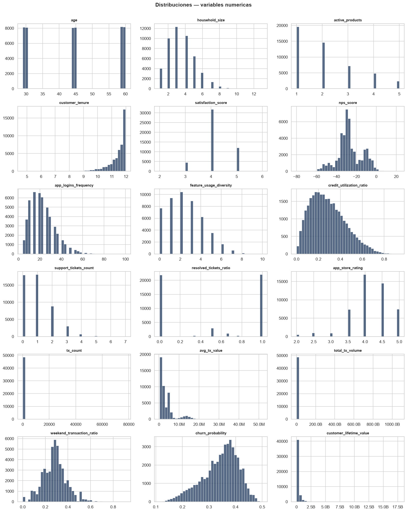
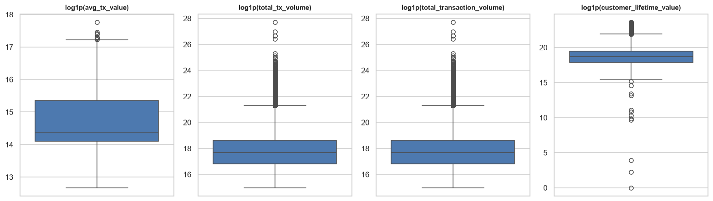
La distribución de churn_probability (Figura 9, izquierda) es unimodal y
aproximadamente simétrica en torno a 0,35, pero truncada en ambos extremos: no existen clientes
con probabilidad inferior a 0,11 ni superior a 0,50. Esta ausencia de valores en las regiones
extremas es la primera señal de que la variable no registra un evento de fuga observado, sino un
puntaje previamente calculado. El CLV (Figura 12, izquierda), en escala logarítmica, se aproxima a
una distribución normal, comportamiento característico de las variables log-normales propias de
magnitudes monetarias.
Respecto de las variables categóricas (Figura 3), el género se reparte de forma casi
equilibrada (24.033 mujeres, 49,3 %) y el sentimiento del feedback es mayoritariamente
positivo (38.897 clientes, 79,8 %). Entre las variables de alta cardinalidad (Figuras 4 y 5),
Bogotá concentra 16.967 clientes (34,8 %), mientras que occupation distribuye 48.723
clientes entre 35 niveles con una frecuencia máxima de apenas 1.456 casos (3,0 %), lo que la
convierte en una variable de escaso poder discriminativo en su forma actual.
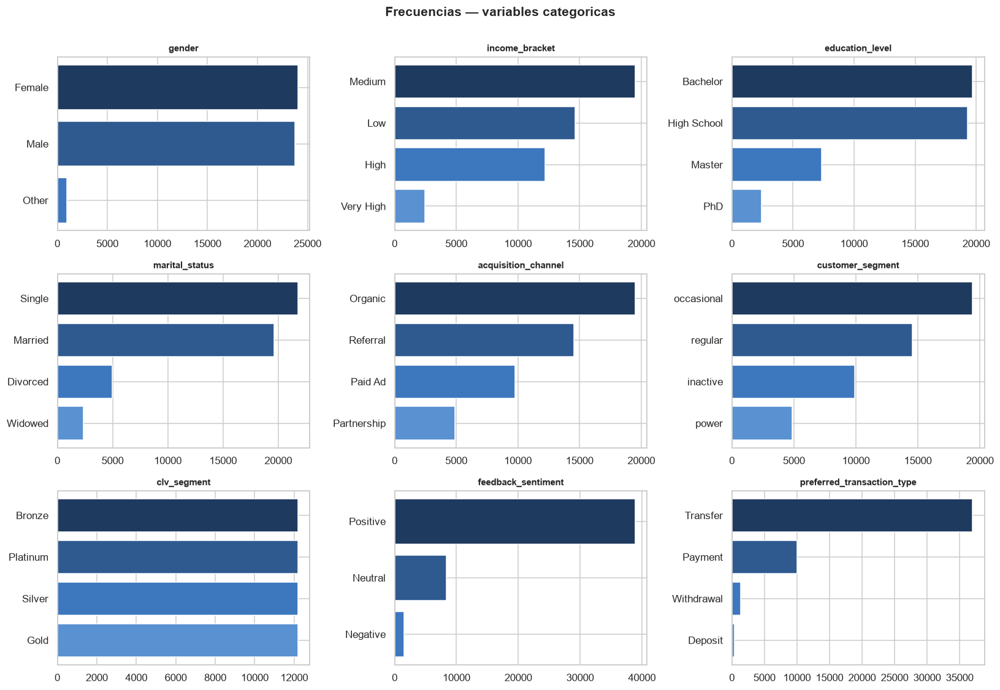
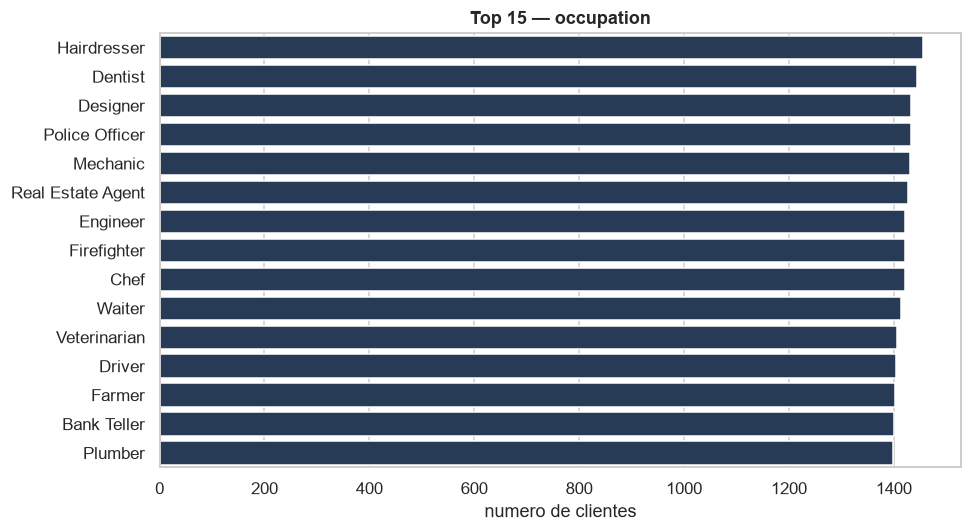
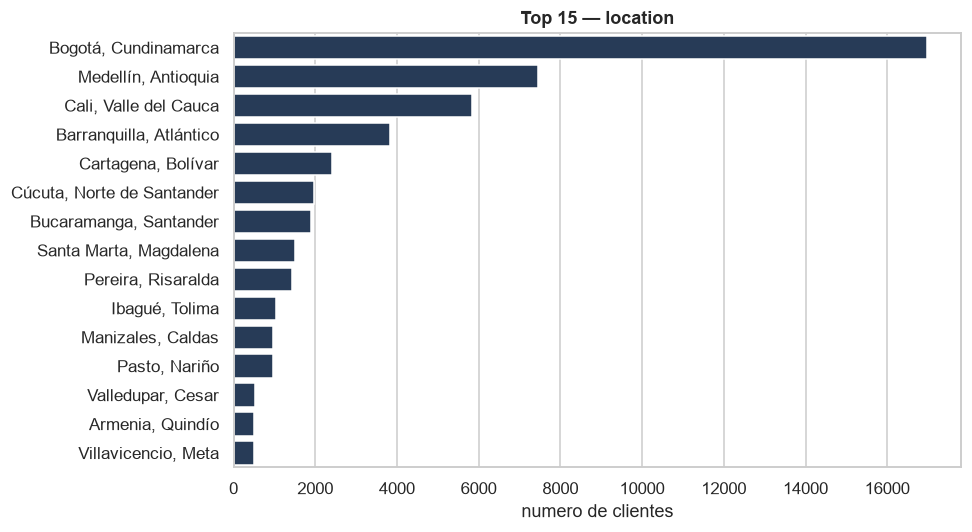
La tenencia de productos (Figura 6) es marcadamente desigual: la cuenta de ahorros alcanza al 78,9 % de los clientes y el pago de facturas al 70,1 %, mientras que el producto de seguros solo llega al 21,2 %. Esta variable resultará central en el análisis de la fuga.
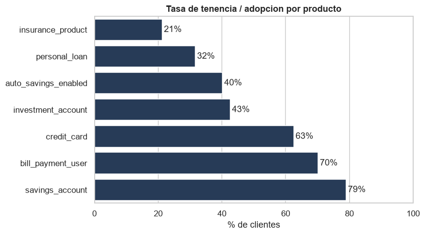
Los valores ausentes se concentran en únicamente tres columnas (Figura 7 y Tabla 3); las 51 restantes están completas.
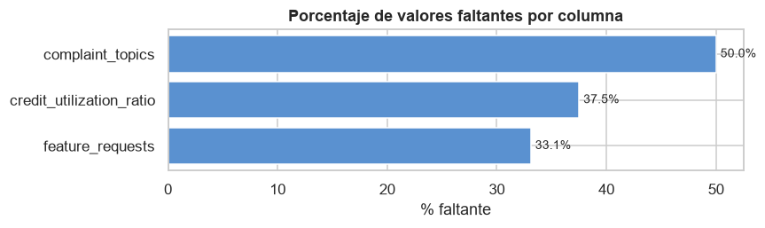
| Columna | Faltantes | % | Mecanismo |
|---|---|---|---|
complaint_topics | 24.346 | 50,0 | No explicado por las variables examinadas |
credit_utilization_ratio | 18.263 | 37,5 | Estructural: ausente si no posee tarjeta |
feature_requests | 16.115 | 33,1 | No explicado por las variables examinadas |
El contraste de cada columna contra una variable que pudiera explicar la ausencia arroja un
resultado concluyente para credit_utilization_ratio: la tabla de contingencia frente
a credit_card es perfecta, ya que el 100 % de los registros con valor ausente
corresponde a clientes sin tarjeta de crédito y el 100 % de los registros informados corresponde a
clientes con tarjeta. Se trata, por tanto, de un faltante estrictamente estructural, cuyo
significado es no aplica y no dato perdido. En cambio,
complaint_topics y feature_requests no muestran relación con las
variables de referencia examinadas, por lo que su ausencia se comporta como aproximadamente
aleatoria; su correlación con la variable objetivo es de −0,0007 y −0,0066 respectivamente. Esta
distinción es relevante porque implica tratamientos diferentes: imputar cero en la utilización de
crédito es correcto por definición del dominio, mientras que para las otras dos columnas la
decisión defendible es descartarlas y evitar imputaciones sin respaldo en los datos.
El conjunto incluye dos grupos de columnas que resumen la actividad transaccional de cada cliente. Una comparación directa muestra que ninguno de los tres pares principales coincide fila a fila, resultado que en principio sugeriría que miden magnitudes distintas. Sin embargo, al comparar además sus distribuciones como conjuntos de valores ordenados, el diagnóstico cambia por completo (Tabla 4).
| Par de columnas | Coinciden por fila (%) | Mismos valores (%) | Diagnóstico |
|---|---|---|---|
avg_tx_value / average_transaction_value |
0,0 | 100,0 | Duplicado desalineado |
total_tx_volume / total_transaction_volume |
0,0 | 100,0 | Duplicado desalineado |
tx_count / monthly_transaction_count |
0,0 | 0,0 | Distinta ventana temporal |
transaction_frequency / avg_daily_transactions |
100,0 | 100,0 | Duplicado exacto |
Los dos primeros pares contienen exactamente el mismo conjunto de valores —coincidencia del 100 % al ordenarlos— pero ninguna correspondencia a nivel de fila. La única explicación consistente con ambos hechos es que se trata de la misma variable cuyo orden fue alterado respecto de los identificadores de cliente: un duplicado corrupto, no una medida alternativa. El cuarto par es un duplicado exacto y alineado, redundante por definición. El tercero, en cambio, corresponde a la misma magnitud expresada en una ventana temporal distinta. Este diagnóstico se verifica de forma independiente en la Sección 2.2.10 contra el detalle real de transacciones.
Consistentemente, el análisis de multicolinealidad (Tabla 5) identifica un bloque de tres variables mutuamente idénticas y un par de variables de satisfacción fuertemente asociadas.
| Variable A | Variable B | r |
|---|---|---|
transaction_frequency | avg_daily_transactions | 1,000 |
monthly_transaction_count | avg_daily_transactions | 1,000 |
monthly_transaction_count | transaction_frequency | 1,000 |
satisfaction_score | nps_score | 0,917 |
Varias variables presentan límites que resultan difíciles de atribuir a un proceso natural de registro (Tabla 6).
| Variable | Mín. | P1 | P99 | Máx. |
|---|---|---|---|---|
age | 29,00 | 29,00 | 60,00 | 60,00 |
churn_probability | 0,11 | 0,17 | 0,46 | 0,50 |
customer_tenure | 4,70 | 8,63 | 11,97 | 11,97 |
satisfaction_score | 2,00 | 3,00 | 5,00 | 6,00 |
La edad se restringe exactamente al intervalo de 29 a 60 años, sin un solo cliente fuera de él,
y la antigüedad se satura en 11,97 tanto en el percentil 99 como en el máximo. Que una
probabilidad no alcance nunca los extremos 0 y 1 refuerza la interpretación de
churn_probability como un puntaje derivado. En conjunto, estos patrones sugieren que
el conjunto es al menos parcialmente sintético, lo que obliga a ser prudente al extrapolar
conclusiones fuera de los rangos observados. Finalmente, se registra un único cliente con CLV
exactamente igual a cero (0,002 % del total), volumen irrelevante que no compromete el
análisis.
La cuantificación mediante la regla del rango intercuartílico con factor 1,5 (Tabla 7) confirma lo anticipado por los diagramas de caja.
| Variable | Atípicos | % |
|---|---|---|
failed_transactions | 8.818 | 18,1 |
monthly_transaction_count | 6.394 | 13,1 |
transaction_frequency | 5.889 | 12,1 |
avg_daily_transactions | 5.889 | 12,1 |
tx_satisfaction | 5.783 | 11,9 |
tx_count | 5.783 | 11,9 |
Estos valores no corresponden a errores de captura sino a colas legítimas de distribuciones
asimétricas: en failed_transactions, por ejemplo, la mediana y ambos cuartiles valen
cero, de modo que cualquier cliente con al menos una transacción fallida es marcado como atípico
por construcción de la regla. Eliminar estas observaciones supondría descartar precisamente a los
clientes más activos y a los que experimentan incidencias, que son informativos para ambos
objetivos. La decisión adoptada es conservarlos.
La matriz de correlación de Pearson (Figura 8) resume las asociaciones lineales entre las 28 variables numéricas. Destacan tanto los bloques de variables transaccionales mutuamente redundantes ya identificados como una asociación aislada y muy intensa con la variable objetivo de fuga.
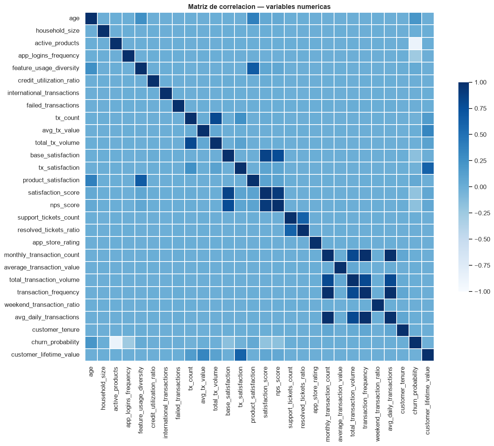
Dado el fuerte sesgo de las variables monetarias, la Tabla 8 contrasta el coeficiente de Pearson con el de Spearman, que captura relaciones monótonas no necesariamente lineales.
| Variable | Pearson | Spearman |
|---|---|---|
Con churn_probability | ||
active_products | −0,88 | −0,84 |
app_logins_frequency | −0,26 | −0,28 |
age | 0,21 | 0,21 |
satisfaction_score | −0,18 | −0,19 |
nps_score | −0,17 | −0,16 |
Con customer_lifetime_value | ||
total_tx_volume | 0,11 | 0,98 |
avg_tx_value | 0,34 | 0,76 |
tx_satisfaction | 0,61 | 0,56 |
tx_count | 0,16 | 0,56 |
El contraste es revelador para el CLV. La correlación de Pearson con
total_tx_volume es de apenas 0,11, lo que sugeriría una relación débil; sin embargo,
el coeficiente de Spearman asciende a 0,98, es decir, una relación monótona prácticamente
perfecta. La discrepancia se explica por la extrema asimetría de ambas variables: unos pocos
valores muy grandes dominan el cálculo lineal y enmascaran una relación de rango casi
determinista. Esta observación tiene una consecuencia metodológica directa: en escala logarítmica,
el volumen transaccionado debería ser un predictor muy potente del CLV, y evaluar la asociación
únicamente con Pearson habría llevado a descartarlo erróneamente.
En cuanto a las variables categóricas, la asociación medida mediante la V de Cramér resulta
baja en general, con dos excepciones moderadas: income_bracket con
education_level (V = 0,38) y customer_segment con
clv_segment (V = 0,38); esta última es esperable, pues ambas describen la
intensidad de la relación comercial. El resto de los pares presenta valores iguales o cercanos a
cero, lo que indica independencia y descarta redundancia entre las categóricas.
La Figura 9 muestra la distribución de la fuga y su comportamiento por segmento de cliente, y la Figura 10 la fuga promedio según la tenencia de cada producto.
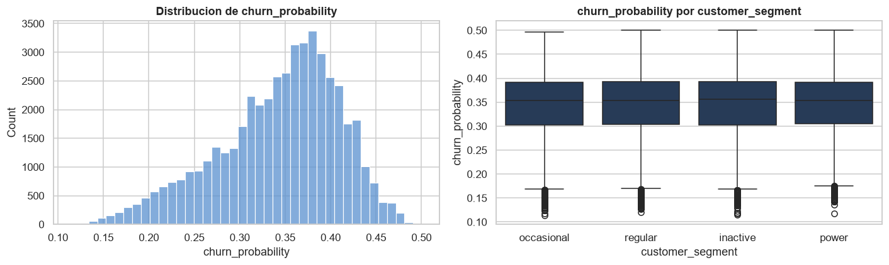
churn_probability
(izquierda) y su comportamiento por segmento de cliente (derecha).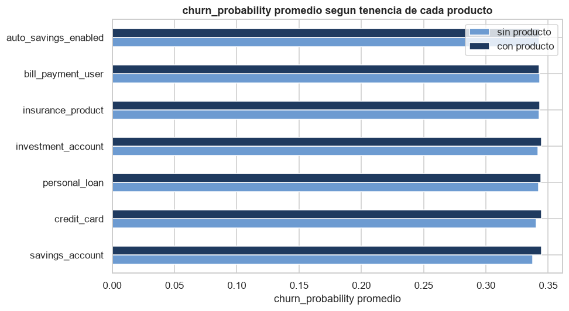
El hallazgo central del análisis surge al desagregar la fuga por el número de productos activos (Tabla 9). La relación no es simplemente fuerte: es una escalera de paso constante.
| Productos activos | Media | Desv. est. | Clientes | Δ media |
|---|---|---|---|---|
| 1 | 0,40 | 0,03 | 19.576 | — |
| 2 | 0,35 | 0,03 | 14.653 | −0,05 |
| 3 | 0,30 | 0,03 | 7.197 | −0,05 |
| 4 | 0,25 | 0,03 | 4.871 | −0,05 |
| 5 | 0,20 | 0,03 | 2.426 | −0,05 |
Cada producto adicional reduce la fuga promedio exactamente en 0,0499 en promedio, con una
desviación entre los cuatro saltos de apenas 0,00057 y una desviación estándar constante de 0,03
en los cinco grupos. La correlación entre ambas variables es r = −0,876, de modo que un
único predictor explica el R2 = 0,767 de la varianza de la etiqueta. Una
regularidad de esta naturaleza —paso idéntico, dispersión idéntica— no es propia de un fenómeno de
comportamiento observado, en el que cabría esperar efectos decrecientes y varianza heterogénea
entre grupos. La interpretación más plausible es que churn_probability fue generada a
partir de active_products mediante una regla determinista más un término de ruido de
escala reducida. Combinado con el acotamiento del rango documentado antes, ello configura un caso
de fuga de información: entrenar un modelo que incluya active_products produciría
métricas excelentes que no reflejarían capacidad predictiva real sino la recuperación de la
fórmula generadora (Kaufman et al., 2012).
Las restantes variables presentan asociaciones débiles pero coherentes con la teoría (Figura 11): a mayor satisfacción y mayor NPS, menor fuga. Las variables categóricas, evaluadas mediante el tamaño de efecto η2 (Tabla 10), explican una fracción prácticamente nula de la varianza.
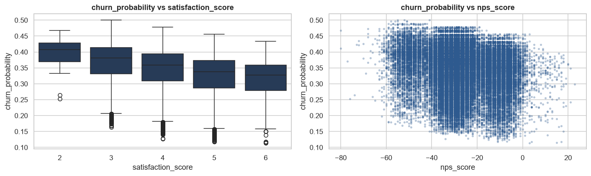
| Variable categórica | η2 |
|---|---|
income_bracket | 0,0050 |
location | 0,0004 |
education_level | 0,0002 |
preferred_transaction_type | 0,0001 |
customer_segment | 0,0001 |
acquisition_channel | 0,0000 |
Ninguna categórica supera el 0,5 % de varianza explicada, lo que confirma que el perfil demográfico y el canal de adquisición aportan una señal marginal frente al número de productos.
El CLV, representado en escala logarítmica (Figura 12), presenta una distribución aproximadamente log-normal y una progresión ordenada a lo largo de los segmentos de valor.
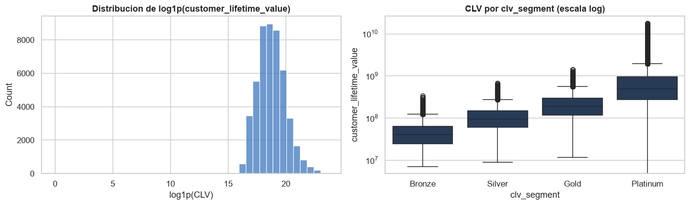
clv_segment | CLV mediano | customer_segment | CLV mediano |
|---|---|---|---|
| Bronze | 4,11 × 107 | inactive | 3,15 × 107 |
| Silver | 9,58 × 107 | occasional | 8,80 × 107 |
| Gold | 1,91 × 108 | regular | 2,36 × 108 |
| Platinum | 4,93 × 108 | power | 5,34 × 108 |
La progresión es monótona y de gran amplitud en ambas particiones: el CLV mediano se multiplica
por doce entre Bronze y Platinum, y por diecisiete entre los clientes inactivos y los
de mayor actividad (Tabla 11). El tamaño de efecto de clv_segment sobre el CLV es
η2 = 0,194, muy superior al de cualquier categórica sobre la fuga.
Resulta notable, en contraste, que el CLV mediano no varíe con el número de productos activos (Figura 13, izquierda): permanece en torno a 1,29 × 108 para clientes con uno a cuatro productos y solo asciende levemente a 1,38 × 108 con cinco. Es decir, la variable que casi determina la fuga carece de relación con el valor del cliente. El CLV se explica por la intensidad transaccional —como muestra el panel derecho de la Figura 13 y confirma el coeficiente de Spearman de 0,98 con el volumen— y no por la amplitud de la relación comercial. Ambos objetivos responden, por tanto, a mecanismos distintos, y la Figura 14 lo corrobora: la correlación entre fuga y CLV es prácticamente nula (r = −0,02).
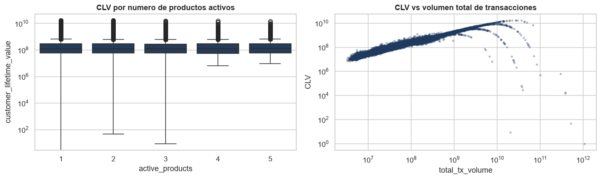
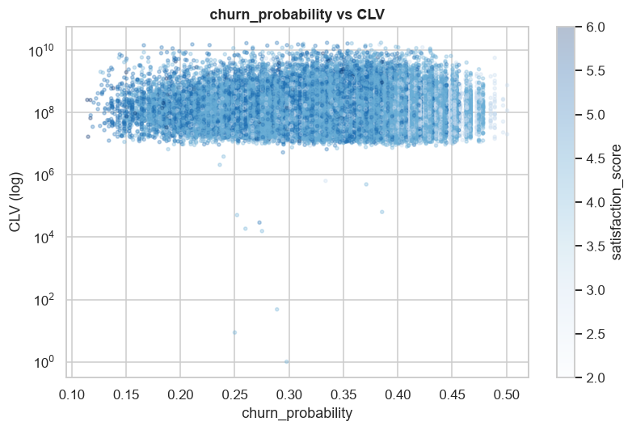
La tabla de transacciones cubre del 4 de enero al 29 de diciembre de 2023 y registra actividad para la totalidad de los 48.723 clientes. Su composición por tipo de operación aparece en la Tabla 12.
| Tipo | Cantidad | Participación (%) |
|---|---|---|
| Transfer | 1.433.963 | 45,4 |
| Payment | 970.548 | 30,7 |
| Withdrawal | 456.577 | 14,5 |
| Deposit | 298.069 | 9,4 |
| Total | 3.159.157 | 100,0 |
La auditoría de calidad de esta tabla arroja 102 filas exactamente duplicadas (0,003 %), ningún
monto menor o igual a cero, ninguna fecha nula, ningún cliente huérfano sin perfil asociado y
ningún cliente sin transacciones; las cinco comprobaciones se ejecutan explícitamente en el
cuaderno. Cabe señalar que el signo de la operación reside
exclusivamente en el campo type, dado que todos los montos son positivos; calcular
flujos netos exigirá aplicar el signo correspondiente según el tipo.
Los montos por tipo de operación (Figura 15) presentan distribuciones similares entre sí en escala logarítmica. La evolución mensual (Figura 16) es estable, sin tendencia ni estacionalidad marcada, y la distribución por día de la semana (Figura 17) es homogénea, sin la caída de fin de semana que cabría esperar en datos financieros reales —observación coherente con la naturaleza parcialmente sintética del conjunto.
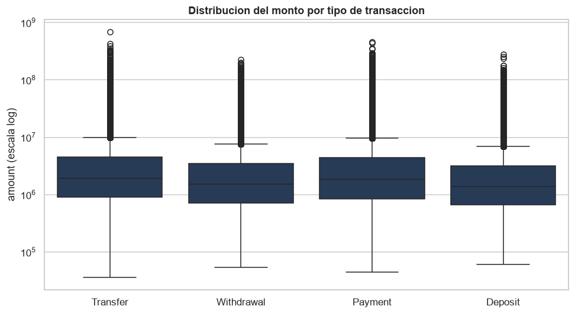
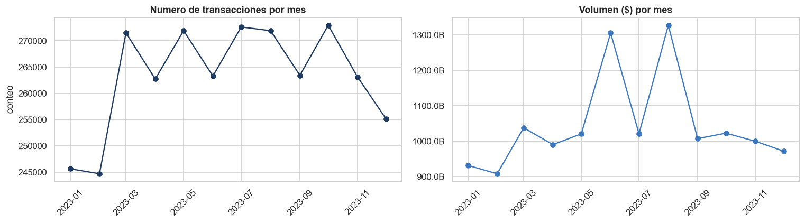
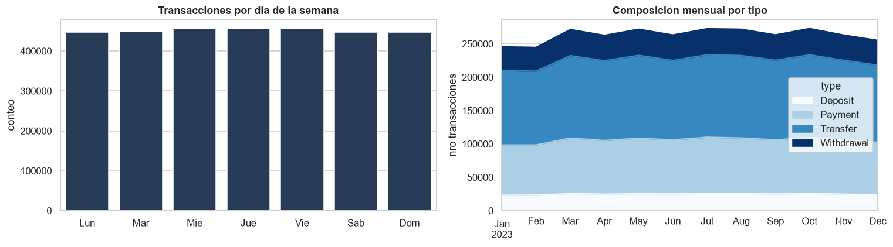
El aporte decisivo de esta tabla es que permite verificar de forma independiente los resúmenes
por cliente. Agregando el detalle real por customer_id y comparándolo con cada
columna reportada se obtiene la Tabla 13.
| Columna reportada | Magnitud real | Coincidencia (%) | Veredicto |
|---|---|---|---|
tx_count | Número de transacciones | 100,0 | Confiable |
total_tx_volume | Suma de montos | 100,0 | Confiable |
avg_tx_value | Monto promedio | 100,0 | Confiable |
monthly_transaction_count | Número de transacciones | 0,1 | Descartar |
total_transaction_volume | Suma de montos | 0,4 | Descartar |
average_transaction_value | Monto promedio | 1,1 | Descartar |
El resultado es inequívoco y confirma el diagnóstico de la Tabla 4: las tres columnas del primer grupo reproducen exactamente la agregación del detalle transaccional, mientras que sus homólogas del segundo grupo apenas coinciden en un 0,1 a 1,1 % de los casos, porcentaje atribuible a coincidencias fortuitas. La Figura 18 ilustra gráficamente esta correspondencia perfecta para el volumen, junto con la fuga promedio por quintil de actividad transaccional.
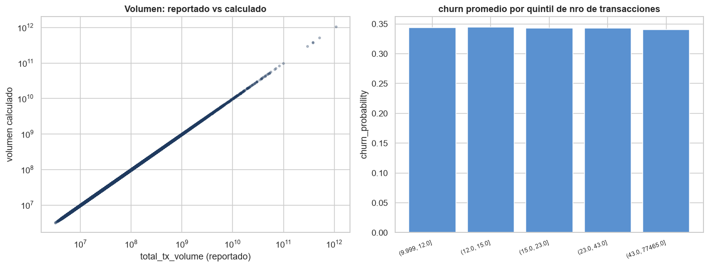
Los hallazgos anteriores determinan directamente el tratamiento de los datos previo al modelado, según se resume en la Tabla 14.
| Hallazgo del EDA | Decisión adoptada |
|---|---|
Fuga casi determinada por active_products
(R2 = 0,767, escalera de paso constante) |
Auditar la construcción de la etiqueta; excluir active_products del conjunto de
predictores y reportar por separado el desempeño con y sin ella |
| Columnas transaccionales duplicadas o desalineadas (Tablas 4 y 13) | Eliminar average_transaction_value, total_transaction_volume,
avg_daily_transactions y monthly_transaction_count; conservar las
verificadas contra el detalle |
credit_utilization_ratio ausente exactamente cuando no hay tarjeta |
Imputar cero por tratarse de un no aplica; la imputación no usa ningún estadístico del conjunto y por tanto no introduce fuga |
Faltantes sin mecanismo ni señal en complaint_topics y
feature_requests |
Descartar ambas columnas; no imputar contenido sin respaldo |
| Asimetría extrema en variables monetarias; ρSpearman = 0,98 entre CLV y volumen | No eliminar atípicos; estandarizar dentro del pipeline |
satisfaction_score y nps_score con
r = 0,917 | Conservar una sola de las dos en modelos lineales |
occupation de alta cardinalidad y
η2 = 0,0008 | Eliminar por cardinalidad sin señal |
Se emplean como referencia los modelos lineales vistos en el curso, que constituyen el punto de partida natural para datos tabulares y ofrecen coeficientes interpretables, condición útil cuando el objetivo incluye entender qué variables explican la fuga. Puesto que la variable objetivo es continua, se desarrollan las dos formulaciones.
La regresión logística modela la probabilidad de pertenecer a la clase positiva mediante la función logística aplicada a una combinación lineal de las variables:
Los parámetros se estiman minimizando la entropía cruzada sobre las n observaciones. Sobre esa función objetivo se añaden los dos esquemas de regularización estudiados. La penalización Ridge (L2) (Hoerl y Kennard, 1970) reduce la magnitud de los coeficientes de forma continua y reparte el peso entre variables correlacionadas; la penalización Lasso (L1) (Tibshirani, 1996) sustituye la norma euclídea por la norma L1, cuya geometría lleva coeficientes exactamente a cero y produce, por tanto, selección automática de variables:
En ambas formulaciones C es el inverso de la intensidad de regularización: valores pequeños penalizan con más fuerza. Se exploraron los valores C ∈ {10−3, 10−2, 10−1, 1, 10, 102} combinados con las dos penalizaciones mediante búsqueda en rejilla.
Puesto que churn_probability es continua, la tarea admite tratarse directamente
como regresión, sin binarizar. Se emplean los estimadores Ridge y
Lasso de scikit-learn, que aplican las mismas
dos penalizaciones sobre el error cuadrático:
Aquí el hiperparámetro es α, la intensidad de la penalización, con una convención inversa a la de C: valores grandes penalizan más. Se exploraron α ∈ {0,01; 0,1; 1; 10; 102; 103; 104; 105} para Ridge y α ∈ {10−5, 10−4, 10−3, 10−2, 10−1} para Lasso, y se compararon contra mínimos cuadrados ordinarios sin penalización. Las métricas reportadas son el coeficiente de determinación R2, la raíz del error cuadrático medio (RMSE) y el error absoluto medio (MAE).
Esta formulación cumple además una función diagnóstica. Como se muestra en la Sección 3.1, el R2 mide directamente qué fracción de la varianza de la etiqueta reproduce cada conjunto de variables, y por ello detecta la fuga de información con mucha mayor nitidez que el área bajo la curva, que comprime la diferencia al operar sobre la etiqueta ya binarizada.
Para acotar empíricamente el margen de mejora disponible se incorpora un clasificador de k vecinos más cercanos, que asigna a cada observación la clase mayoritaria entre sus k vecinos en el espacio estandarizado y no impone forma funcional alguna. Si existieran relaciones no lineales o interacciones relevantes entre los predictores, este método debería superar al modelo lineal. Se exploraron k ∈ {10, 25, 50, 100, 200}.
Las decisiones de la Sección 2.2 se aplicaron sobre la unión de las dos tablas. Del detalle transaccional se eliminaron 102 filas exactamente duplicadas y se derivaron doce variables de comportamiento —número de operaciones, montos agregados, recencia, días activo, volatilidad del monto, meses con actividad y composición por tipo de operación—, obteniendo una tabla unida de 48.723 filas y 66 columnas.
De ellas se descartaron 17, cada una con evidencia cuantitativa (Tabla 15), resultando un
conjunto de 49 columnas. Los 18.263 valores ausentes de credit_utilization_ratio se
imputaron con cero, decisión respaldada por la correspondencia perfecta con la tenencia de
tarjeta. Toda la evidencia de la Tabla 15 se recalcula dentro del cuaderno, de modo que cada
criterio de eliminación queda respaldado por una salida de la misma ejecución.
| Columna | Evidencia | Criterio |
|---|---|---|
active_products |
r = −0,8760; R2 = 0,767 con una sola variable; saltos medios de −0,0499 con desviación de 0,00057 | Fuga de información |
customer_lifetime_value, clv_segment |
ρSpearman = 0,984 con total_tx_volume |
Segunda variable objetivo |
average_transaction_value, total_transaction_volume |
100 % de los mismos valores con 0 % de coincidencia por fila | Duplicado desalineado |
avg_daily_transactions, monthly_transaction_count |
r = 1,000 con transaction_frequency | Duplicado exacto |
first_transaction_date, last_transaction_date |
Idéntico número de valores distintos y rango que first_tx y
last_tx | Duplicado |
nps_score | r = 0,917 con
satisfaction_score | Colinealidad |
occupation | 35 niveles, ninguno supera el 3 %; η2 = 0,0008 | Cardinalidad sin señal |
complaint_topics, feature_requests |
50,0 % y 33,1 % ausentes, con ausencia aleatoria y correlación de −0,0007 y −0,0066 con el objetivo | Faltantes sin mecanismo |
last_survey_date, first_tx, last_tx |
η2 entre 0,0035 y 0,0070 | Fechas sin señal |
customer_id | Llave única | Identificador |
Merece mención una hipótesis que la verificación descartó. Cabía sospechar que
active_products fuese la suma de las columnas booleanas de tenencia, en cuyo caso
conservarlas habría reintroducido la fuga; la comprobación arrojó una coincidencia de apenas
22,5 % y una correlación de 0,006, por lo que esas columnas son independientes y se conservaron.
El experimento de ablación de la Sección 3.1 lo confirma de forma independiente.
La construcción de la etiqueta binaria exige una precaución que conviene explicitar. Binarizar
churn_probability por su mediana requiere estimar esa mediana, y una mediana
calculada sobre las 48.723 filas haría que la definición de la etiqueta de prueba dependiera de
las propias observaciones de prueba. Sería una fuga de información en el diseño experimental,
distinta de la fuga por variable diagnosticada en la Sección 2.2.8 pero igualmente invalidante, y
tanto más fácil de pasar por alto cuanto que el estadístico en cuestión parece inocuo.
El orden que evita ese problema es el siguiente. Primero se realiza la partición en
entrenamiento y prueba, en proporción 80/20 (38.978 y 9.745 clientes) con semilla fija
(random_state = 42), sobre la variable objetivo
continua. Después se estima el umbral de binarización como la mediana de
churn_probability en el conjunto de entrenamiento
(0,353972). Finalmente ese umbral, ya fijo, se aplica a ambos conjuntos. Como la etiqueta no
existe en el momento de partir, la partición no puede estratificarse por ella; el balance
resultante es de todos modos de 49,99 % y 49,91 % de clase positiva en entrenamiento y prueba,
porque el corte es la mediana.
La magnitud de esa fuga potencial se midió explícitamente, en lugar de darse por supuesta. Con
la semilla 42, el umbral estimado solo con entrenamiento coincide con el que se habría obtenido
sobre el conjunto completo, y ninguna etiqueta de prueba difiere. La razón es que
churn_probability toma únicamente 1.977 valores distintos entre 48.723 clientes
—unos 25 clientes por valor—, de modo que la mediana cae sobre un valor repetido y la coincidencia
depende del reparto concreto. Repitiendo el procedimiento con otras semillas (Tabla 16) se
comprueba que el umbral sí se desplaza y que llegan a cambiar hasta 18 etiquetas de prueba. La
coincidencia es, por tanto, un accidente de la partición y no una propiedad del procedimiento, lo
que ilustra por qué el orden correcto debe respetarse con independencia de que una semilla
particular lo haga indiferente.
| Semilla | Umbral en entrenamiento | Diferencia | Etiquetas de prueba que cambian |
|---|---|---|---|
| 0 | 0,354240 | +2,69 × 10−4 | 18 |
| 1 | 0,353858 | −1,14 × 10−4 | 6 |
| 7 | 0,353972 | 0 | 0 |
| 42 | 0,353972 | 0 | 0 |
| 123 | 0,353858 | −1,14 × 10−4 | 5 |
| 2024 | 0,353843 | −1,29 × 10−4 | 16 |
El preprocesamiento sigue el mismo criterio. Generar las indicadoras de las variables categóricas sobre la tabla completa —aunque no emplea la etiqueta— haría que las columnas resultantes dependieran de los datos de prueba. Para evitarlo, la codificación one-hot (descartando el primer nivel para evitar colinealidad perfecta, e ignorando niveles no vistos) y el escalado estandarizado se encapsulan en un ColumnTransformer que vive dentro del pipeline, de modo que se ajustan únicamente con los datos de entrenamiento de cada partición de la validación cruzada. La codificación eleva el conjunto a 78 variables.
La selección de hiperparámetros se realizó por búsqueda en rejilla con validación cruzada de cinco particiones, estratificada en clasificación y ordinaria en regresión, optimizando el área bajo la curva ROC y el R2 respectivamente. Como métricas de evaluación se reportan, en clasificación, el AUC, la exactitud, la precisión, la exhaustividad (recall) y el F1, complementadas con la matriz de confusión y las curvas ROC y precisión–exhaustividad; y en regresión, el R2, el RMSE y el MAE. Los experimentos se ejecutaron en Python 3.13.3 con scikit-learn 1.7.2, numpy 2.2.6 y pandas 2.3.3, con un tiempo total de cómputo de aproximadamente 150 segundos.
Antes de entrenar el modelo definitivo se midió el efecto de la variable identificada como fuga mediante un experimento de ablación: se entrenaron la misma regresión logística y la misma regresión Ridge sobre distintos subconjuntos de variables (Tabla 17).
| Subconjunto de variables | Número | AUC (clasificación) | R2 (regresión Ridge) |
|---|---|---|---|
Todas las variables (incluye active_products) | 79 | 0,9736 | 0,9211 |
Sin active_products | 78 | 0,6821 | 0,1513 |
Sin active_products ni columnas booleanas | 71 | 0,6821 | 0,1514 |
| Solo variables transaccionales derivadas | 12 | 0,5016 | 0,0007 |
| Solo demografía y satisfacción | 66 | 0,6816 | 0,1507 |
El resultado es concluyente en ambas formulaciones, pero es la de regresión la que lo expresa
con mayor claridad. Incluir active_products eleva el AUC de 0,6821 a 0,9736, una
diferencia de 0,2915; y eleva el R2 de 0,1513 a 0,9211, una diferencia de
0,7698. La segunda cifra admite una lectura directa que la primera no permite:
con esa columna el modelo reproduce el 92 % de la varianza de la etiqueta,
y sin ella apenas el 15 %. Eso no corresponde a capacidad predictiva, sino a la
recuperación de la regla que generó la etiqueta, y confirma cuantitativamente el diagnóstico de la
Sección 2.2.8. La formulación de clasificación comprime esta diferencia porque el AUC opera sobre
la etiqueta ya binarizada y descarta la magnitud del puntaje; de ahí el valor diagnóstico de
abordar también la tarea en su forma continua.
La coincidencia exacta entre los escenarios segundo y tercero corrobora además que las columnas booleanas de tenencia no reintroducen la fuga por una vía indirecta, lo que justifica conservarlas. Igualmente revelador es el cuarto escenario: las variables derivadas del detalle transaccional, usadas en solitario, alcanzan un AUC de 0,5016 y un R2 de 0,0007, ambos indistinguibles del azar. El comportamiento transaccional real de los clientes no guarda relación con la etiqueta de fuga de este conjunto, lo que refuerza la conclusión de que dicha etiqueta fue construida sintéticamente.
La Tabla 18 recoge el desempeño de ambas penalizaciones para los valores de C explorados, junto con el número de variables que cada configuración conserva.
| Penalización | C | AUC medio | Desv. est. | Variables no nulas |
|---|---|---|---|---|
| Lasso (L1) | 0,10 | 0,6824 | 0,0039 | 57 |
| Ridge (L2) | 0,01 | 0,6823 | 0,0038 | 78 |
| Lasso (L1) | 1,00 | 0,6822 | 0,0041 | 76 |
| Ridge (L2) | 0,10 | 0,6822 | 0,0040 | 78 |
| Ridge (L2) | 1,00 | 0,6821 | 0,0042 | 78 |
| Lasso (L1) | 100,00 | 0,6821 | 0,0042 | 78 |
| Lasso (L1) | 10,00 | 0,6821 | 0,0042 | 77 |
| Ridge (L2) | 10,00 | 0,6821 | 0,0042 | 78 |
| Ridge (L2) | 100,00 | 0,6821 | 0,0042 | 78 |
| Lasso (L1) | 0,01 | 0,6820 | 0,0038 | 19 |
| Ridge (L2) | 0,001 | 0,6816 | 0,0037 | 78 |
| Lasso (L1) | 0,001 | 0,6799 | 0,0036 | 3 |
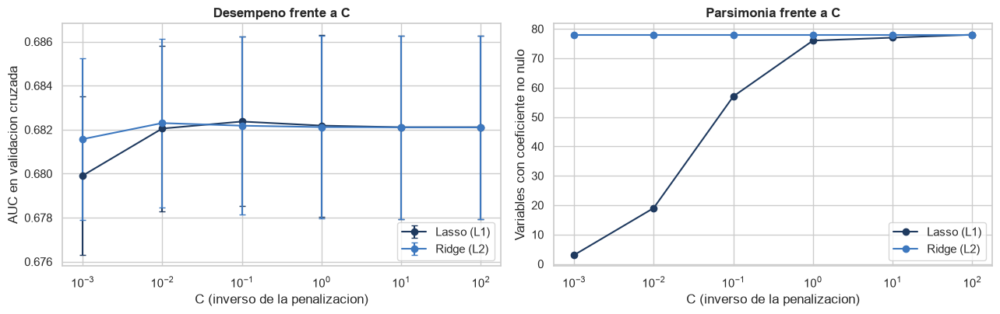
Las diferencias entre configuraciones son mínimas: el rango completo abarca 0,0025 puntos, inferior a la desviación entre particiones (0,0039). Esto indica que, tras la limpieza, el conjunto no presenta colinealidad severa que la regularización deba corregir. La búsqueda en rejilla seleccionó Lasso con C = 0,1, que conserva 57 de las 78 variables.
El valor de la penalización L1 no reside, por tanto, en el AUC sino en la parsimonia, y la Tabla 18 permite cuantificar ese intercambio con precisión: Lasso con C = 0,01 alcanza 0,6820, apenas cuatro diezmilésimas por debajo del óptimo y muy dentro del ruido entre particiones, empleando solo 19 variables en lugar de 57. Si el criterio de selección incorporara la simplicidad del modelo además del desempeño, esa configuración sería preferible. Incluso el modelo de tres variables (C = 0,001) conserva un AUC de 0,6799, lo que confirma que la señal está extremadamente concentrada.
Se evaluó asimismo la contribución de las variables transaccionales dentro del modelo seleccionado: su inclusión produce un AUC de 0,6824 frente a 0,6818 sin ellas, una diferencia de 0,0006 muy inferior a la desviación entre particiones. En regresión la diferencia es igualmente despreciable: R2 de 0,1513 frente a 0,1507. La evidencia confirma que no aportan capacidad predictiva.
La búsqueda en rejilla seleccionó α = 1.000 para Ridge y α = 0,0001 para Lasso, ambos óptimos interiores a la rejilla explorada. La Figura 20 muestra el camino de los coeficientes en función de α y hace visible la diferencia geométrica entre ambas penalizaciones: Ridge encoge los coeficientes de forma continua sin anular ninguno en todo el rango, mientras que Lasso los lleva a cero uno a uno, produciendo selección automática de variables.
La Tabla 19 recoge el desempeño de los tres modelos de regresión sobre el conjunto de prueba.
| Modelo | R2 | RMSE | MAE | Variables no nulas |
|---|---|---|---|---|
| Mínimos cuadrados ordinarios | 0,1499 | 0,0617 | 0,0507 | 78 |
| Ridge (α = 1.000) | 0,1509 | 0,0617 | 0,0507 | 78 |
| Lasso (α = 0,0001) | 0,1511 | 0,0617 | 0,0507 | 40 |
El RMSE debe interpretarse contra la desviación típica de la variable objetivo en el conjunto de prueba, 0,0669, que es el error que obtendría un modelo que predijera siempre la media. El modelo lo reduce únicamente en un 7,9 %, magnitud coherente con un R2 de 0,151. En términos absolutos el error es pequeño —el MAE de 0,0507 sobre un objetivo acotado en [0,11; 0,50]—, pero eso se debe al estrecho rango de la variable y no a un ajuste satisfactorio. Las diferencias entre mínimos cuadrados, Ridge y Lasso son mínimas, lo que reproduce el mismo diagnóstico obtenido en clasificación: tras la depuración no queda colinealidad severa que la regularización deba corregir, y su aporte está en la parsimonia —40 variables frente a 78— y no en el ajuste.

El diagnóstico de residuos (Figura 21) no revela patrones sistemáticos: los residuos se distribuyen de forma aproximadamente simétrica en torno a cero y sin estructura frente a la predicción, lo que indica que el modelo lineal no deja sin capturar una relación evidente. El rango comprimido de las predicciones frente al de los valores reales es la manifestación gráfica del bajo R2: el modelo distingue tendencias generales pero no reproduce la variabilidad individual.
La Tabla 20 resume el desempeño sobre el conjunto de prueba, que no intervino en ninguna etapa del ajuste: ni en la estimación del umbral, ni en el escalado, ni en la codificación, ni en la selección de hiperparámetros.
| Métrica | Valor |
|---|---|
| AUC en validación cruzada | 0,6824 ± 0,0039 |
| AUC en prueba | 0,6832 |
| Exhaustividad (recall) | 0,6515 |
| Precisión | 0,6311 |
| F1 | 0,6412 |
| Exactitud | 0,6360 |
| Variables seleccionadas | 57 de 78 |
El AUC en prueba (0,6832) coincide con el obtenido en validación cruzada (0,6824) dentro del margen de error, lo que indica un modelo estable y sin sobreajuste. Al estar las clases balanceadas, precisión y exhaustividad resultan equilibradas (0,631 y 0,652). La Figura 22 presenta la curva ROC, la curva precisión–exhaustividad y la matriz de confusión.
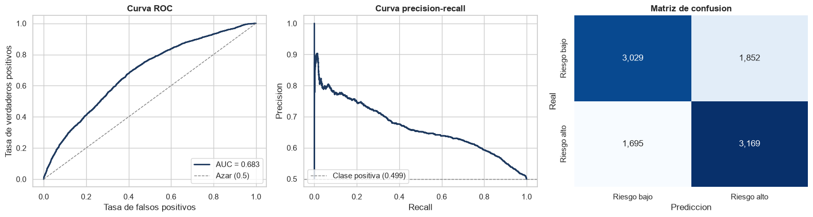
La Tabla 21 recoge el desempeño del clasificador de k vecinos más cercanos.
| k | AUC medio | Desv. est. |
|---|---|---|
| 10 | 0,5956 | 0,0025 |
| 25 | 0,6234 | 0,0066 |
| 50 | 0,6400 | 0,0072 |
| 100 | 0,6549 | 0,0060 |
| 200 | 0,6645 | 0,0035 |
El AUC crece monótonamente con k y el mejor valor explorado, k = 200, alcanza 0,6645, por debajo de la regresión logística regularizada (0,6824). Que el desempeño mejore al ampliar el vecindario indica que la estructura local es ruido y no señal, y que el método converge hacia un comportamiento cada vez más suave. Que un clasificador sin forma funcional impuesta no supere al modelo lineal sugiere que queda poca estructura no lineal o de interacción por capturar con estas variables. Este resultado sustituye por una medición lo que de otro modo sería una conjetura sobre el margen de mejora disponible.
Los coeficientes, expresados en escala estandarizada y por tanto comparables entre sí, muestran una concentración notable de la señal (Figura 23).
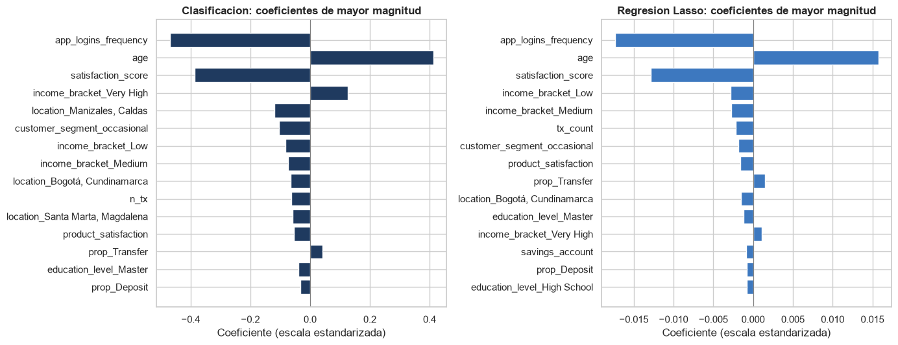
| Variable | Logística (clasificación) | Lasso (regresión) |
|---|---|---|
app_logins_frequency | −0,4701 | −0,0174 |
age | +0,4123 | +0,0157 |
satisfaction_score | −0,3861 | −0,0128 |
Tres variables concentran prácticamente toda la capacidad predictiva: la frecuencia de acceso a la aplicación (−0,4701), la edad (+0,4123) y la satisfacción declarada (−0,3861). Las restantes presentan coeficientes de magnitud considerablemente menor. Los signos son coherentes con la teoría de retención: mayor uso del canal digital y mayor satisfacción se asocian con menor riesgo de fuga, mientras que la edad se asocia positivamente con él.
La concordancia entre las dos formulaciones constituye un argumento de robustez. La regresión Lasso sobre el objetivo continuo —un modelo distinto, ajustado sobre una variable distinta y con una función de pérdida distinta— señala exactamente las mismas tres variables, en el mismo orden y con los mismos signos. La lectura no es, por tanto, un artefacto de haber binarizado la etiqueta. Las magnitudes no son directamente comparables entre columnas de la Tabla 22, porque la logística opera sobre el logit y la regresión sobre la escala original del puntaje; lo comparable es el orden relativo y el signo.
Este trabajo abordó la caracterización, la auditoría de calidad y el modelado base para predecir la fuga de clientes sobre un conjunto público de una empresa fintech colombiana. El análisis exploratorio describió las 54 variables de los 48.723 clientes y los 3,16 millones de transacciones asociadas, y verificó que ambas tablas son mutuamente consistentes: sin clientes huérfanos, sin montos inválidos, sin fechas nulas y con cobertura transaccional completa.
La auditoría reveló tres condiciones que habrían comprometido cualquier resultado obtenido
sobre los datos crudos. La principal es la relación entre churn_probability y
active_products: una escalera de paso constante que explica el 76,7 % de la varianza
de la etiqueta y que, junto con el truncamiento artificial del rango, indica que la variable
objetivo fue construida a partir de un predictor disponible. La segunda es la presencia de
columnas transaccionales duplicadas y desalineadas, cuya naturaleza solo se hizo evidente al
comparar las distribuciones como conjuntos y al reconciliarlas contra el detalle real. La tercera
es el carácter estructural de los valores faltantes de credit_utilization_ratio.
Estos hallazgos se tradujeron en la eliminación documentada de 17 variables y en un conjunto
depurado de 49 columnas.
El experimento de ablación cuantificó el impacto de la fuga en las dos formulaciones, y es la
de regresión la que lo hace de forma más elocuente: incluir active_products eleva el
R2 de 0,1513 a 0,9211 y el AUC de 0,6821 a 0,9736. Que una sola columna
reproduzca el 92 % de la varianza de la etiqueta no admite lectura como capacidad predictiva. Se
optó por excluirla, que es el único escenario metodológicamente defendible.
Sobre el conjunto depurado, la regresión logística con penalización L1 alcanza un AUC de 0,6832 en el conjunto de prueba, con exhaustividad de 0,6515 y precisión de 0,6311, seleccionando 57 de las 78 variables disponibles; una configuración más penalizada (C = 0,01) alcanza un AUC prácticamente idéntico con solo 19 variables, de modo que la parsimonia se obtiene a un coste despreciable. Sobre el objetivo continuo, la regresión Lasso alcanza R2 = 0,1511 con RMSE de 0,0617, frente a una desviación típica del objetivo de 0,0669: una reducción del error de apenas el 7,9 %. El desempeño se concentra en tres predictores —frecuencia de uso de la aplicación, edad y satisfacción declarada—, identificados de forma concordante por las dos formulaciones, mientras que el comportamiento transaccional no aporta capacidad predictiva alguna, como confirman tanto las correlaciones (todas por debajo de 0,03 en valor absoluto) como el AUC de 0,5016 y el R2 de 0,0007 que alcanzan esas variables en solitario.
Sobre el margen de mejora disponible, este trabajo aporta una medición en lugar de una conjetura. Un clasificador de k vecinos más cercanos, que no impone forma funcional alguna y por tanto podría capturar relaciones no lineales e interacciones, alcanza en el mejor caso un AUC de 0,6645, inferior al del modelo lineal. La implicación es que el margen para el modelo propio del proyecto final es estrecho: la suma de las contribuciones individuales de los predictores restantes acota ese margen, y un incremento sustancial del AUC solo sería alcanzable reintroduciendo la variable que produce la fuga, lo que invalidaría el resultado. Este resultado negativo es, en sí mismo, un hallazgo útil para orientar la siguiente fase.
El estudio presenta limitaciones que conviene declarar. El análisis se apoya en un único conjunto cuyos indicios de generación sintética —rangos truncados, ausencia de estacionalidad semanal, paso constante en la escalera de fuga e independencia respecto del comportamiento transaccional— limitan la validez externa de las conclusiones sustantivas sobre comportamiento financiero, aunque no afectan la validez del procedimiento de auditoría ni del modelado. Asimismo, no fue posible confirmar con la fuente cómo se construyó la etiqueta, por lo que la fuga de información se sostiene como la hipótesis más plausible y no como un hecho verificado.
Breiman, L. (2001). Random forests. Machine Learning, 45(1):5–32.
Chen, T. y Guestrin, C. (2016). XGBoost: A scalable tree boosting system. En Proceedings of the 22nd ACM SIGKDD International Conference on Knowledge Discovery and Data Mining, páginas 785–794.
Gupta, S., Hanssens, D., Hardie, B., Kahn, W., Kumar, V., Lin, N., Ravishanker, N. y Sriram, S. (2006). Modeling customer lifetime value. Journal of Service Research, 9(2):139–155.
Hoerl, A. E. y Kennard, R. W. (1970). Ridge regression: Biased estimation for nonorthogonal problems. Technometrics, 12(1):55–67.
Kaufman, S., Rosset, S., Perlich, C. y Stitelman, O. (2012). Leakage in data mining: Formulation, detection, and avoidance. ACM Transactions on Knowledge Discovery from Data, 6(4):1–21.
Little, R. J. A. y Rubin, D. B. (2019). Statistical Analysis with Missing Data. Wiley, Hoboken, NJ, 3.ª edición.
Muñoz Guerrero, L. E., Ceballos, Y. F. y Trejos Rojas, L. D. (2025). COFINFAD: Colombian Fintech Financial Analytics Dataset. Mendeley Data, V1. DOI: 10.17632/mhb4zn3258.1.
Pedregosa, F. et al. (2011). Scikit-learn: Machine learning in Python. Journal of Machine Learning Research, 12:2825–2830.
Tibshirani, R. (1996). Regression shrinkage and selection via the Lasso. Journal of the Royal Statistical Society: Series B, 58(1):267–288.
Tukey, J. W. (1977). Exploratory Data Analysis. Addison-Wesley, Reading, MA.
Verbeke, W., Dejaeger, K., Martens, D., Hur, J. y Baesens, B. (2012). New insights into churn prediction in the telecommunication sector: A profit driven data mining approach. European Journal of Operational Research, 218(1):211–229.
Wirth, R. y Hipp, J. (2000). CRISP-DM: Towards a standard process model for data mining. En Proceedings of the 4th International Conference on the Practical Applications of Knowledge Discovery and Data Mining, páginas 29–39.